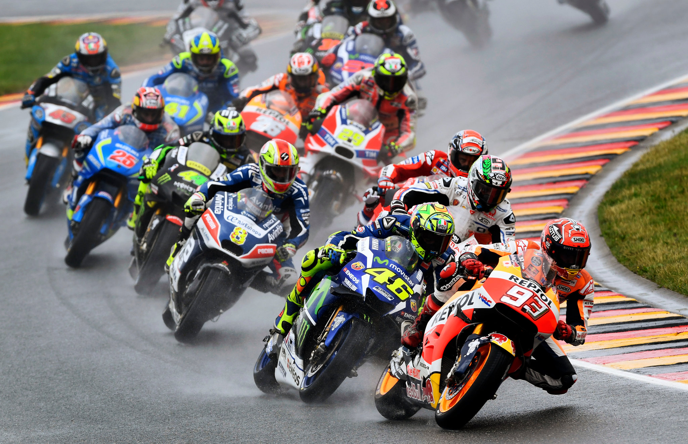
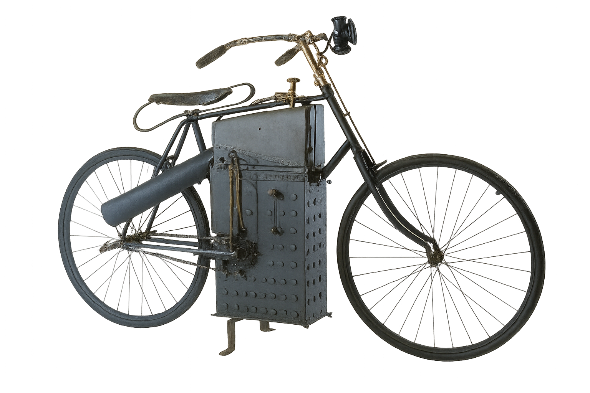

¿Eres amante de las motos?, ¿Estas interesad@ en la historia del motociclismo?, ¡si es asi estas en la pagina correcta! ¡Binvenido!
En esta pagina veras informacion sobre distintos temas relacionados con motociclismo, desde sus inicios hasta la actualidad (La historia de pilotos iconicos, las primeras motocicletas, los record de velocidad y mucho más)

¿QUIÉN INVENTÓ LA PRIMERA MOTO?¿CUÁNDO SE CREO?
El estadounidense Sylvester Howard Roper inventó la primera moto, cuando se creo la primera moto de la historia en 1867-1869, su creador nunca se imaginó que iba a evolucionar tanto su invento. El invento consistia en un motor de dos cilindros a vapor con dos pistones de 164cc, accionado por carbón. Este es el punto de partid de todo lo que vendria después.

CURIOSIDADES DE LA HISTORIA DE LA MOTO
Una vez conocido que Sylvester Howard Roper fue quien inventó la primera moto, vamos a ver acontecimientos interesante sobre su evolución:
- 20 años mas tarde del invento, en 1985, los alemanes Wilhelm Maybach y Gottieb Daimler le añadieron a la maquina un motor de combustión y la llamaron Daimler Reitwagen. Consistía en un propulsor monocilíndrico a cuatro tienmpos con cautro ruedas y con una velocidad de 18 km/h.
- En 1892, asociados con su compatriota, Alios WolfmÜller, empezaron a fabricar en serie motocicletas con motor de gasolina de dos cilindros y cuatro tiempos. De esta moto se crearon mil unidades. En esta moto te tenia que subir a ella en movimiento debido a que se arrancaba empujandola. No tuvo exito ya que era bastante incomoda y en 1897 se dejó de comercializar
- EN 1987, los hermanos rusos, Eugéne y Michel Werner, experimentaron como mejorar el invento principal incorporando un motor Dion-Bouton a una bicicleta, tampoco tuvo mucho exito pero pudieron comprobar el funcionamiento de otro modelo, "motocyclette"
- Después Nace la scooter. En 1902, George Gauthier crea el "autosillón", lo llamó asi por su facilidad de manejo de la máquina yendo sentado en una posición erguida. Fue muy popular por su versatibilidad y utilidad urbana.
- Con el estallido de la Primera Guerra Mundial cuando el mundo de la motocicleta avanza considerablemente, ya que fue muy practica en los usos militares. A partir de este momento la cilindrada de las motocicletas es cuando aumenta.
PERO... ¿QUIÉN COMERCIALIZÓ UNA MOTO POR PRIEMRA VEZ EN LA HISTORIA?
Fueron George M. Hendee y C. Oscar Hedstrom en Springfield, Massachusetts en 1901, creando The Hendee Manufacturing Company, Que a los años se denominó Indian Motorcycles. A partir de toda su historias, varias marcas empezaron a comercializar las motocicletas con distintas caracteristicas, Ducati, fundada en 1926 en Bolonia, Italia.
CURIOSIDADES SOBRE LA MARCA HONDA
Honda apareció en un pueblo destruido por la guerra, sin dinero, sin gasolina, sin caminos..., y en 30 años a coneguido ganar a America, Europa y MotoGP. Soiciro Honda Nació en el año 1906 en Japón, su infacia se basó en trabajar duro en el campo, y tenia un padre el cual reparaba bicicletas, A los 15 años abandonó la escuela y se va a Tokio como mecánico cínico. En 1937 desarrollo una empresa llamada "tocai seichi" que fabricaba pistones para toyota, no tuvo exito pero no abandono. Varios años despues se convierte en provedor aficial, luego vino la guerra, sus fabricas fueron bombvardeadas y todo fue destruido, Japon practicamente estaba por los suelos. Oichiro encuentra motores pequeños degeneradores militares abandonadas y lo montó sobre una bicicleta, así apareció Honda Type A, o tambien llamado "bata bata", practicamente la priemra motocicleta HONDA. En 1949, aparece Honda Type D, La priemra moto de real, en 2 tiempos y 98 centimetros cubicos, en este moemnto es cuando la gente empezaron a decir que HONDA sabe lo que esta haciendo. Luego apareció la motocicleta Honda super cube c 100, con un motor de 50 centimetros cubicos, era casi indestructible, se vendieron mas de 100.000.000 de unidades.
Galería de imágenes
{kind=link}
{kind=link}
{kind=link}
{kind=link}
{kind=link}
{kind=link}
Tabla de datos
| Marcas | Modelos | año | Precio | Cilindrada | Potencia | Velocidad Max. | Peso | Compatibilidad A2 (si/no) |
|---|---|---|---|---|---|---|---|---|
| Kawasaki | H2r | 2015 | 55.000€ | 998 cc | 310 CV | 331 km/h | 216 kg | No |
| BMW | GS 850 | 2019 | 12.100€ | 853 cc | 95 CV | 200 km/h | 186 kg | Si |
| Ducati | Scrambler Throttle | 2015 | 12.990€ | 803 cc | 73 CV | 200 km/h | 170 kg | Si |
| Honda | CRF 450 Rally | 2013 | 31.140€ | 449 cc | 60 CV | 170 km/h | 138 kg | Si |
| Kawasaki | ZX4R | 2023 | 9.000€ | 399 cc | 77 CV | 207 km/h | 188 kg | Si (limitable a 48 CV) |
Formulario
Envia tus datos para mas informacion
Contacto
Nombre: Pedro Alexandro
email: pbazcoj2912@g.educaand.es
Teléfono: +34 111222333444
Ciudad: La Línea de la Concepción
Paginas oficiales de las motos: